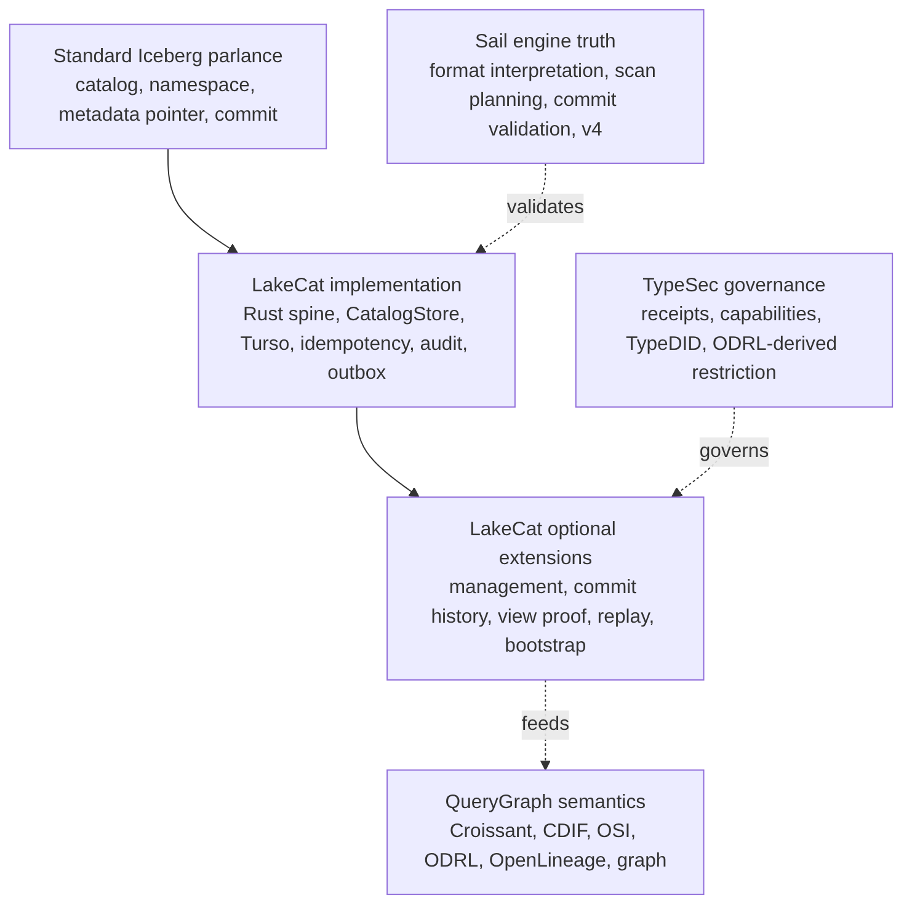

A layered system fails the moment its words blur. The most common mistake is to call every useful LakeCat feature an “Iceberg extension,” which makes the standard boundary too large. The test is simple: ask what breaks if a client knows nothing about LakeCat. If a PySpark job cannot load, commit, or drop a table without the concept, it belongs to standard compatibility. If PySpark keeps working but operators, governed agents, or QueryGraph gain stronger evidence, the concept is an additive surface.
Every term in this book falls into one of six categories.

Standard Iceberg parlance — the words Iceberg already owns: catalog, namespace, table identifier, current metadata location, snapshot, manifest list, manifest, data file, delete file, schema and partition evolution, optimistic commit, REST compatibility. LakeCat must implement these faithfully. Changing their meaning means losing compatibility.
LakeCat implementation — how this Rust catalog
satisfies the contract reliably: the service spine, the
CatalogStore trait, the Turso-backed durable store,
normalized idempotency rows, pointer logs, audit rows, outbox rows,
redaction rules, and replay validators. These make ordinary Iceberg
behavior atomic, inspectable, and replayable. They are not extensions;
they are good engineering behind a standard surface.
LakeCat optional extensions — additive APIs beside the standard path: management inventory, commit-history inspection, view proof, credential-root posture, replay verification, OpenLineage projection, and QueryGraph/QGLake bootstrap bundles. They help operators, agents, and QueryGraph without becoming hidden requirements for ordinary table access.
TypeSec governance — authority and receipt semantics: who may act, capability proof, TypeDID envelopes, ODRL-derived restrictions, and agent posture. TypeSec decides; LakeCat carries and records the decision.
QueryGraph semantics — composition above the catalog: Croissant, CDIF, OSI, ODRL, OpenLineage, and Grust graph projections built from the governed source of truth.
Sail engine truth — table-format interpretation, metadata-as-data, scan planning, commit validation, and typed v4 behavior. The catalog binds its proof to engine truth rather than reimplementing the format.
The single reference below replaces the per-claim restatements that earlier drafts repeated; read each LakeCat claim through its category.
| Claim | Standard reading | Category | Portable idea (if any) |
|---|---|---|---|
| Rust service / catalog spine | Iceberg needs a catalog authority, not a language | LakeCat implementation | “A catalog can prove what it committed, planned, vended, and emitted” |
| Turso-backed durable store | Iceberg needs durable state + atomic pointer movement, not a named DB | LakeCat implementation | CAS, exact-retry, row/content binding, pointer-history proof |
| REST namespace/table routes + commit CAS | Standard compatibility | Standard Iceberg | — (must stay ordinary) |
| Idempotency, pointer logs, audit/outbox, replay validation | Mostly outside the table contract | LakeCat implementation / extension | Stable catalog-event identity; scoped replay admission |
| Governed scan with policy receipt | Iceberg gives scan inputs, not receipts | TypeSec governance | Engine-proved effective projection + predicate |
| Credential vending posture | Catalog-adjacent, not ordinary table semantics | TypeSec governance | Bounded, redacted, engine-neutral credential profile |
| QueryGraph / QGLake / OpenLineage handoff | Not required for table access | QueryGraph semantics | Redacted, replayable lineage/view/commit evidence |
| Typed Iceberg v4 behavior | Belongs to the format as it evolves | Sail engine truth | Engine-owned v4 interpretation, not catalog JSON parsing |